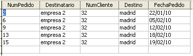

Tecnología de la Información y la Comunicación: Bases de datos
4.2. Formularios
La introducción y manipulación de la información en la vista de datos, ya sean en una tabla o en una consulta, es poco clara. Es fácil confundir los registros y cometer fallos al teclear los datos.
Para evitar estos problemas se usan los formularios.
|  | |
| Vista de datos de una tabla o consulta | Vista formulario |
Importante
Un formulario es una pantalla de introducción, consulta o modificación de datos en una o varias tablas.
Los controles son los elementos de un formulario. Según su relación con los datos pueden ser:
- Dependientes.- están relacionados con campos de las tablas o consultas del formulario.
- Independientes.- no tienen origen en ningún campo. Conforman el aspecto visual del formulario.
- Calculados.- muestran una expresión que relaciona campos, controles y operadores.
Al igual que las consultas y las tablas los formularios pueden ser creados en vista diseño o mediante un asistente.
Del mismo modo, el asistente guiará nuestros pasos, mientras que la vista diseño permitirá un diseño totalmente personalizado.
Creación de formularios
Ambas opciones nos permiten insertar controles que se activan mediante botones en la barra de controles del formulario.
Barra de controles de formulario
Comprueba lo aprendido
Aunque todavía no has trabajado con los formularios, seguro que puedes relacionar cada control con el tipo al que pertenece.
D.- Dependiente I.- Independiente
Para saber más
No todos los controles aparecen en la barra estándar. Mediante el icono  se activa una segunda de barra de controles.
se activa una segunda de barra de controles.
Más controles de formulario